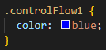
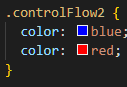
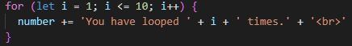
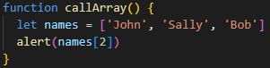
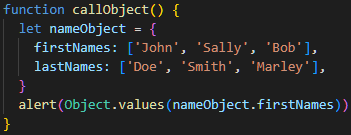
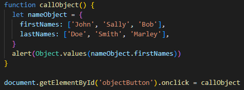

Edan Mourie
Sprint 3 Tech - JavaScript Fundamentals
Kia ora and welcome to my Sprint 3 Tech Blog!
An analogy to describe JavaScript and its relationship to HTML and CSS:
As discussed in previous blogs, HTML is the structure of a website and CSS is the styling. JavaScript is the doing.
For a real-life example of these three concepts, we will look at a McDonalds building.
If using purely HTML, the McDonalds building would be in black and white, have only walls, and the text would all be the same basic font. You could have images of windows, doors, and the logo sign, but they would not be spaced where you want them.
Now adding CSS, the McDonalds building has windows, doors, and the logo sign in the correct spots – but they still don’t work. The roof and walls have colour, and text can be styled.
JavaScript does the work. The logo sign now lights up at night, music is playing, the doors and windows can open when someone pulls on them. If you wanted the roof to be painted a different colour, you could do that with JavaScript too. People move in and out of the building, doing stuff you do at a McDonalds.
Explaining control flow and loops.
Control flow is the way the computer reads and executes the code, it does so from top-to-bottom in the code.
I can make this WORD blue using the code below:

If I have the same code as above, but also change the colour of this WORD again later in the code, it will instead be red, as seen in th code below.

An example of this happening in real life is instructions for tying shoes. You are following the instructions and they say to “tie your laces in a bow”, so you do that, but the next instruction is “actually, tie a double-knot instead”, so you undo the bow and tie a double knot.
Loops do exactly what they say, they loop the code. You can set how many times the code loops with the condition (the part in the brackets). Every time the code loops it does the execution {the part in the curly brackets}.
A common loop you may do in real life is counting to 10. In real life it doesn't seem like a loop but I'll show you (in the code below) what I'm talking about.

To break it down, the loop starts at whatever number you decide in the first section of the condition - I've put (let i = 1;), so the loop starts at 1.
The second part of the condition says how many times to loop - I've said (i <= 10;), which means it will loop as long as the number is less than or equal to 10.
The third part of the condition says how many to add to the loop - I've put (i++) which means it will add 1 every time it loops (meaning the first section invisibly becomes i = 2).
So, we start counting to 10 at 1, since our goal is to stop counting at 10, and we are still below 10, we will keep counting, and we will keep counting one higher each time. So next is two, we are still below 10, so we count again. 3. 4. 5. 6. 7. 8. 9. Finally, 10 (i = 10), we go to count more but we can't go past 10 because it is the maximum we can go (i <= 10 -- i has to be equal to or less than 10), therefore the loop stops before we count up again.
I would like to note that what I have done for this example is hard-code a stop point by saying (i <=10). Generally you want to avoid hard-coding loops because if I were to want a different maximum number, I would have to change what the maximum value of [i] can be every single time.
What is the Document Object Model (DOM) and how do you interact with it? - Put simply, the DOM is a family tree of objects. The original parent object is the window which is the browser you are using. The second object (child of window), which is one you actually interact with, is the document (HTML file). From the document comes its children, tags such as head and body. A child of a head tag might be links and a title , but the child of the body tag will be div, p, h tags.
The tree goes on and on...
Going back to the DOM. Document = our HTML file, Object = every object in the file including the file itself, Model - the tree/way you access each object The DOM allows you to access each individual object and change it separately from another object.
Difference between accessing data from arrays and objects:
Arrays are values that are stored as a numerical number even if the thing you are storing is not a number. For example...
let names = ["John", "Sally", "Bob"]
The name "John" has the array value of 0, "Sally" is 1, and "Bob" is 2. To access a specific name you have to call for the array number.
Bob appears because I called for the name in position 2, which is Bob. See code below.

Objects have values that are stored within 'keys'. For example...
let nameObject = {
firstNames: ["John", "Sally", "Bob"]
}
nameObject is the object, however names: is the key.
All of the names appear as I have called for the values of the nameObject object AND the firstNames key at the same time, as seen in the code below.

Note that it did not show the lastNames as they were not called.
What are functions and how are they helpful?
As you have seen in my previous examples I have used a syntax called function. Functions are an independent set of instructions that will be executed as a block.
In the most recent example above, I named the function "callObject". I then created an object called "nameObject", and gave it keys called "firstNames" and "lastNames". Then I created an alert that made the first names pop up on the browser.
All of the code in a function will run when it is called. I called the function by the click of a button, as seen in the code below.

Functions are very helpful because they run these blocks of code when you need them to, as set by predetermined calls such as a